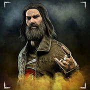
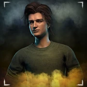
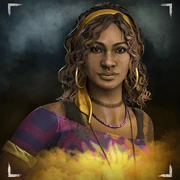

-
Dwight Fairfield

An unlikely leader forced to rise to the occasion, Dwight Fairfield’s reluctant bravery inspires those around him. Understanding the value of teamwork, Dwight is adept at locating and bolstering the efficiency of his teammates.
-
Meg Thomas

Driven by reckless courage, the athletic Meg Thomas has never been afraid to push her limits. Prone to stepping up in the clutch, Meg gets a thrill out of goading Killers into lengthy chases, buying essential time for her teammates.
-
Claudette Morel
Claudette understands the value of altruism, using her aptitude for botany to ensure her teammates are prepared for the challenges ahead. An expert healer to herself and others, Claudette’s supportive presence is always welcome.
-
Jake Park
A solitary specialist, Jake Park’s time in the wilderness has sharpened his survival instincts. Stealthy and resourceful, the only sign of his presence are the Sabotaged Hooks he leaves behind.
-
Nea Karlsson

At first sight I thought it was a cat that passed me by, just a few meters behind me. A shadow that moved without sound. But yelling is not wise in this place. I have spotted her more times, but just in the peripheral. I still don’t know her name, but she evades the monsters with a certain grace.
-
Laurie Strode
I stumbled upon another soul in this doomed corner of the earth. I do not know her name, but there is something about her. I have never crossed paths with her, but she seems as if she's been doing this for far too long. Weary of the environment, clad in a kind of controlled panic, constantly looking over her shoulder, on the lookout.
-
Ace Visconti
I have seen a poor new soul in this nightmare. For most of the others trapped here, fear is our common denominator. This man does not follow suit. Instead, he stands defiantly, analyzing his surroundings with an eerie confidence. In the mere glimpses of him I could afford, I saw a crooked smile as he scavenged something on the ground. Just by watching him from afar, I felt him ignite a fleeting spark of hope in my heart just before he melted into the shadows. With the remaining conviction I have left, I do pray that good fortune stays on his side.
-
William "Bill" Overbeck
Hardened by years of experience, Bill Overbeck knows that survival rarely comes without sacrifice. No matter the cost, he’ll make sure his teammates live to fight another day. It wouldn’t be the first time he was left for dead.
-
Feng Min
A young woman surprised me the other day. She is another guest in this nightmare I can not seem to wake up from. She came running, passed by a wounded girl and didn’t stop. Just a glance behind her, and she was off again. With a determined look on her face, like she had something important to do. A lone wolf maybe? I am not sure what I should call this new person.
-
David King

Another man. In this arena I guess I could start to label as “home”. A man with an athletic frame. He carries an impressive stature. He seems untouchable at first glance. But a second look tells me something else. He seems torn. Distraught and broken. Maybe not by body, but by mind. I have seen him outrun the creatures. But also on a hook, with his bowels fleeing his torso. Something unsettling about that sight.
-
Quentin Smith
“I saw a young man the other day. He seemed both awake and asleep at the same time. A bit drowsy, but determined. Even though I lacked to see anyone or anything going after him, he would not stop. I have witnessed true fear many times at this place. But this man provides a whole new spectra of fear. What would make a man too afraid to even stop to take a breath? He seems determined to reach the gates. I too had that urge once. But I failed too many times to reach them, too many mistakes and deaths. But this young man is different. Maybe he will actually escape. For real. But he looks tired, so intensely tired.”
-
Detective David Tapp
I am not a stranger to law enforcement professionals. I have learned to…spot them. To recognize their posture and sway. Now, one seems to inhabit this, my new home. He looks worn down, but just like me, he refuses to simply lay down and await the coming pain and death. The struggle is the only thing that keeps him sane – something to focus on. Just as you can recognize the hardship of a law enforcer, many times you can also spot a man that has experienced what others never come near. Beatings and violence, determination. Maybe this new man seeks justice? Maybe he still carries a badge? Whatever might he be looking for here, at this place that lacks justice or an end?
-
Kate Denson
A ray of sunshine illuminated this cold and gray place - a ray in the form of a woman. I heard her before I saw her, a voice, more beautiful than I had encountered in some time, came drifting through the trees. While a lament might have been more suited to this sepulchral locale, she sang a song of joy, of hope and family. Her warm smile greeted any that joined her at the campfire and, just for moment, they were able to forget which realm they inhabited. As quick as she was to make friends, I got the feeling that to cross her would be a mistake. To remain so positive and upbeat in such a place would require a will of iron. Perhaps less a ray of sunshine then, but a bolt of lightning? Brilliant light and great power that could split the world in two.
-
Adam Francis
The clever and selfless Adam Francis is no stranger to heroism, boldly risking his own life to save others. A dependable leader in the face of danger, Adam’s ability to strategize quickly has been known to pay off, even if it means putting himself in harm’s way.
-
Jeff Johansen
With a reserved nature often mistaken for stoicism, Jeff Johansen found solace in artistic expression. A simple man with a strong appreciation for home-brewed beer and heavy metal, he’s learned to live with the darkness of his past, holding steadfast in the face of adversity.
-
Jane Romero

Celebrity status never changed Jane Romero, who always preferred to tackle a challenge head on. Blessed with a problem-solver's intuition, her aptitude for working with others is a valued asset. Though words are always her first choice, she’s certainly not afraid to get her hands dirty.
-
Ash Williams
Though he proudly identifies as a self-described “alone wolf,” Ash’s shockingly high pain tolerance and scathing wit have proven invaluable in the face of supernatural danger. Those wheels are always turning, even when the situation appears dire. Never underestimate his mettle.
-
Nancy Wheeler
Studious and rebellious, Nancy Wheeler is a stubborn investigator with an instinct for a good story. When her closest friend, Barb went missing, she did everything she could to unravel the truth and secure justice. A brilliant journalist, she chases stories and follows leads despite the inequality and chauvinism she encounters at the workplace. Pursuing a lead one evening, she fearlessly approaches the Hawkins National Laboratory before suddenly losing consciousness. A moment later she awakens in a strange misty realm with the sound of a familiar roar echoing through the air.
-
Steve Harrington
Popular and arrogant, yet compassionate, Steve Harrington is an unlikely mentor and leader. He often acts as a surrogate big brother to a younger boy named Dustin. He even helped him find his slimy inter-dimensional pet Demogorgon, D'Artagnan. His reputation as a protector grew and he soon became a sort of "babysitter" for a group of kids in Hawkins with a knack for messing around with strange and dangerous things. His courage is unmatched so that he was even able to fend off a Demogorgon when it threatened his friends. One evening he received a call for assistance from his friend Nancy Wheeler. He drove all the way to the Hawkins National Laboratory to see if she was okay. He searched the area but only found her notebook. Before he realised what was happening the ground opened up and a swirl of black mist filled his eyes. When he awakened he was in a strange place that seemed familiar but unfamiliar at the same time.
-
Yui Kimura
Quick decisions are second nature to Yui Kimura, who lives the majority of her life at a breakneck pace. Whether riding an adrenaline high during a late-night street race or leading Killers on a long and winding chase, Yui finds a way to win by any means necessary. Quotes right Yui Kimura is a hardened street racer, able to gain advantages for her and her fellow Survivors in challenging situations.
-
Zarina Kassir
Zarina Kassir stands determined to uncover the truth, regardless of any peril that might arise. A street-smart and thorough documentarian, she’s willing to put herself in harm’s way to achieve her goals -- especially if it means helping those in need.
-
Cheryl Mason
No stranger to indescribable terror, Cheryl Mason has grown emboldened by the looming presence of evil. Drawing strength from the horrors of her past, she has learned to manipulate powers from beyond to achieve her noble goal.
-
Felix Richter
Often called a visionary for his brilliant architectural work, Felix Richter is as determined as he is debonair. Capable of operating at heightened efficiency under immense pressure, his expertise has proven invaluable – especially when facing a deadline.
-
Élodie Rakoto

Occult investigator Élodie Rakoto has seen first-hand that things are not always as they seem. The comforting rational explanation isn’t always correct, and there’s certainly no reasoning with these merciless Killers. Luckily, she’s got more than a few cunning tricks up her sleeve.
-
Yun-Jin Lee
What some call selfish, Yun-Jin Lee calls practical. She didn’t enter the music industry to make friends, though she can appreciate a little collaboration now and again. At the end of the day, she abides by an old classic: if you want something done right, do it yourself.
-
Jill Valentine
Bravery comes natural to Jill Valentine, whose heroism proved invaluable during her harrowing time in Raccoon City. Even with a lethal pursuer on her trail, Jill’s survival instincts provide her and her teammates with a few crucial advantages. Don’t expect her to go down without a fight.
-
Leon Scott Kennedy

Leon Kennedy might be a Rookie, but during that one fateful night, he faced an entire lifetime of horror and brutality. At once resilient and resourceful, Leon is adaptable above all, whether crafting makeshift weaponry or retracing his steps through labyrinthine hallways.
-
Mikaela Reid
A passion for the mystic arts has proven invaluable for Mikaela Reid. A proud horror aficionado and admirer of the macabre, her supernatural touch has opened the door to new possibilities. Though some were initially wary, teammates quickly took to her alternative methods upon seeing the results.
-
Jonah Vasquez
Jonah Vasquez can tell you first-hand that there’s strength in numbers – literally. A seasoned codebreaker and master of mathematics, Jonah’s logical mind makes for a key addition to any team, multiplying chances of successful teamwork by an exponential degree.
-
Yoichi Asakawa

A marine biologist scarred by the haunting memories of his past encounter with Sadako, Yoichi Asakawa has stared into the depths of evil. Blessed with paranormal psychic abilities of his own, his bravery and unwavering resolve makes him a valuable ally against even the darkest forces.
-
Haddie Kaur
Plagued by chilling visions of the inexplicable, Haddie Kaur is driven to brave the perils of the unknown. Possessing the ability to see realms beyond our own, she knows more about the encroaching darkness than most. Perhaps that’s why she’s not afraid to stand face-to-face with danger with flashlight in hand.
-
Ada Wong
Sometimes it’s safer to keep people guessing, and no one knows this better than Ada Wong. Dexterous and enigmatic, Ada’s survival skills make her a valuable ally, provided interests remain aligned.
-
Rebecca Chambers
Never underestimate the value of an experienced field medic. Rebecca Chambers leads by example when almost all seems lost, sometimes facing grave danger to assist her allies. Her medical brilliance keeps teammates alive and inspired, even if it puts her own safety at risk.
-
Vittorio Toscano
Born to Alberto and Caterina Toscano in 1343, Vittorio Toscano was the youngest of three and third in line to inherit his family’s land. At age fifteen, his father sent him to train with Ettore Fabrizio, the same knight who trained his older brothers in the military arts. But Vittorio didn’t take to combat training the way his brothers did. As a student of philosophy, he believed physical violence to be the last refuge of the incompetent.
-
Thalita Lyra
If you were to ask, Thalita Lyra would tell you that what she wanted in life more than anything was to bring people together. Whether it was her father selling out clubs for the latest forró band he’d signed, or her mother showing off Botafogo, Lapa, and Ipanema to groups of tourists from around the world, Thalita loved seeing people come together to share their passion and form meaningful connections.
-
Renato Lyra
Growing up, Renato acted less like a child and more like a scientist, studying the world and people around him. He would poke classmates in the face or stand too close to them, curious to see their reaction.
-
Gabriel Soma
Gabriel Soma was born in a cloning hub on Proxima Centauri C, the first planet humanity colonised. He was part of a small crew that maintained and repaired the robots and androids sent to construct colonization hubs. Unbeknownst to Gabe, every memory of his childhood was implanted in his consciousness by those who cloned him. Like the rest of his crew, he believed he was born to a mother and father on Earth. Psychological stability was maintained by creating a narrative sequence of a loving family. None knew that they were, in fact, bred in a colonisation hub.